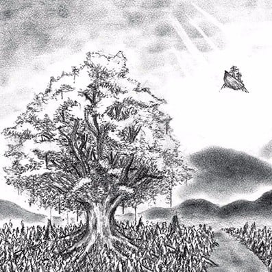
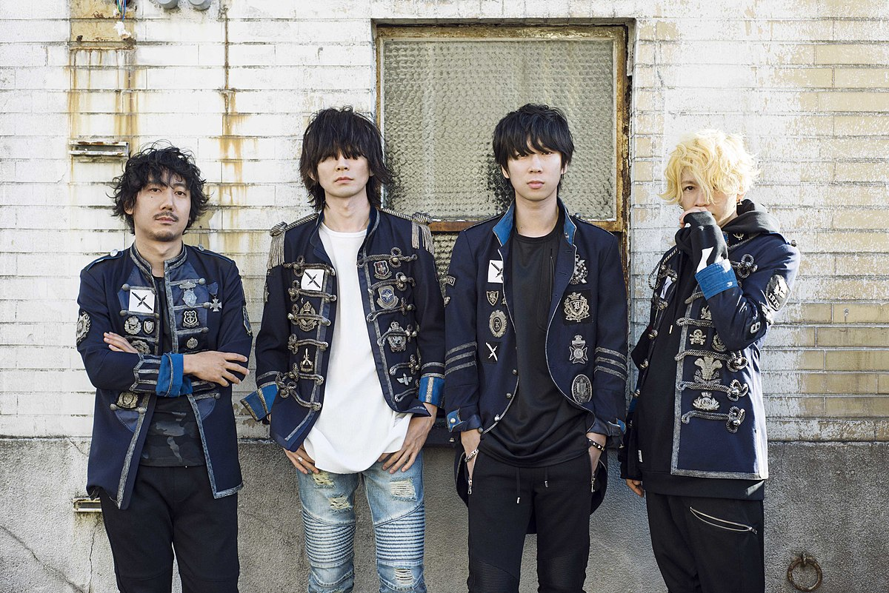

Only Lonely Glory is the eighth single by the alternative rock group BUMP OF CHICKEN. The reason I chose this song out of the few that were number 1 on the Japanese charts is that I have listened to a few of BUMP OF CHICKEN songs before and I wanted to do a Japanese song as most of the music I listen to is Japanese
 This song released on July 7th, 2004 and was a part of their album Yggdrasil and is also their first number 1 single on Oricon Weekly Charts